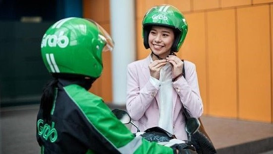

Kolaborasi Grab dan UGM Sokong Industri 4.0
Teknologi | 9 November 2019 | 21:45 WIB
Grab dan Universitas Gadjah Mada (UGM) menandatangani nota kesepahaman (MoU) dalam bidang pendidikan, penelitian dan perwujudan kampus ramah lingkungan yang akan mendukung Industri 4.0 Indonesia.
Neneng Goenadi, Managing Director Grab Indonesia, menuturkan sebanyak 16 persen generasi muda di Asia Tenggara ingin bekerja di sektor teknologi masa depan. Melalui kerja sama tersebut, paparnya, diharapkan dapat mendukung salah satu tujuan Grab for Good untuk membangun angkatan kerja yang siap menyambut masa depan.
"Bersama dengan institusi pendidikan terkemuka seperti UGM, lembaga nirlaba dan perusahaan teknologi terdepan kami ingin melatih 20.000 siswa melalui inisiatif pengembangan talenta teknologi di seluruh Asia Tenggara," kata Neneng dalam keterangannya, Sabtu (9/11).
Kemitraan itu, demikian Grab, sejalan dengan program 'Grab for Good' yang bertujuan untuk meningkatkan keterampilan dan menyediakan kesempatan kepada lebih banyak masyarakat Indonesia dalam menyambut masa depan ekonomi digital. Kemitraan itu akan berlangsung hingga 2 tahun mendatang.